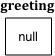
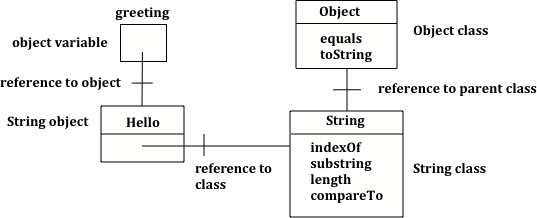
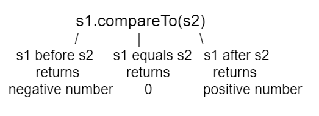
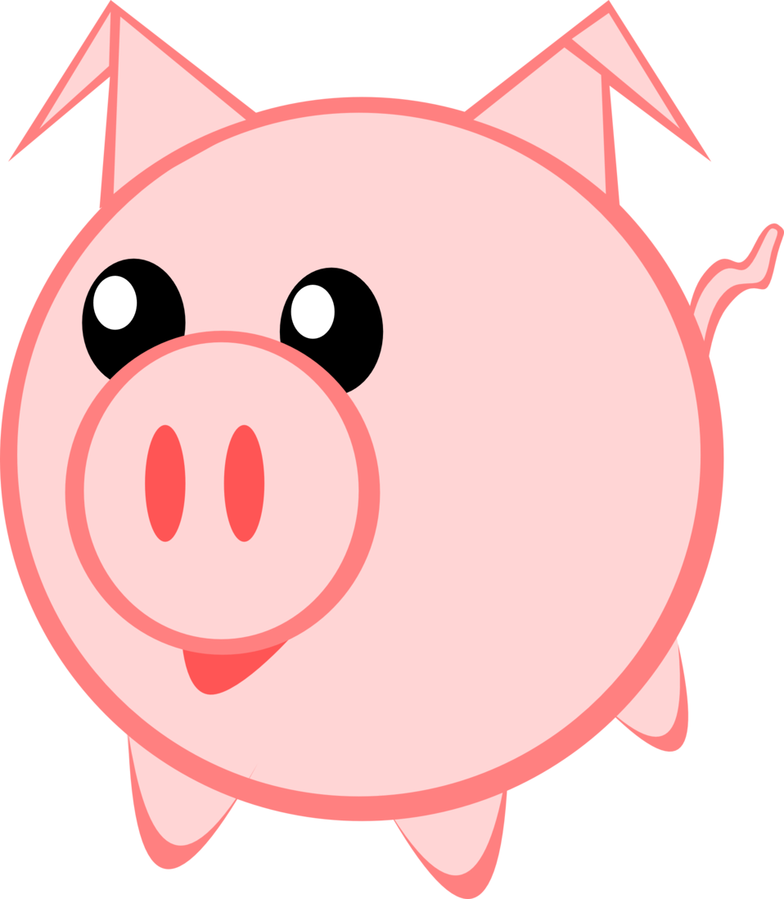

1.15 String Manipulation
Using Objects and Methods
Topic Intro
Text in Java is stored as String objects
String is a class in the built-in java.lang
Strings are reference types , not primitive types.
A string variable can hold a reference or null.
Class names like String start with a capital letter.
Primitive type names like int and double start with lowercase letters.
String References
A string variable can be null

Initial string reference
String greeting = null ; System . out . println ( greeting); This prints null. The variable exists, but it does not yet refer to a String object.
Creating Strings
String greeting1 = "Hello" ; String greeting2 = new String ( "Welcome" ); Both statements create a String object and store a reference in the variable.
In most Java code, the string literal form is preferred.
Code Task
Create first and last name strings
Write a short program that creates and prints two strings.
public class StringCreate { public static void main ( String [] args) { String firstName = "Ada" ; String lastName = new String ( "Lovelace" ); System . out . println ( "Hello, " + firstName); System . out . println ( "Welcome, " + lastName); } } Classroom edit: change the names, and use one literal string and one constructor-created string.
Strings and Object
String is a class type
String object and class relationship
String s = "Hello" ; System . out . println ( s. getClass ()); System . out . println ( s. getClass (). getSuperclass ()); Typical output:
Concatenation
Use + and += to build new strings
String start = "Happy Birthday" ; String name = "Jose" ; String result = start + " " + name; += "!" ;
+ concatenates strings.+= appends to the current variable by creating a new string.Java converts other values to strings when needed.
Strings are immutable (不可变).
Code Task
Birthday message
Start:
public class BirthdayMessage { public static void main ( String [] args) { String start = "Happy Birthday" ; String name = "Jose" ; String result = start + " " + name; += "!" ; System . out . println ( result); } } Edit it so the output is:
Quick Check
Trace string reassignment
String s1 = "xy" ; String s2 = s1; = s1 + s2 + "z" ; System . out . println ( s1); Answer: xyxyz
s2 keeps referring to the earlier "xy" string. The final assignment stores a new string reference in s1.
Number Concatenation
Parentheses change the result
System . out . println ( "12" + 4 + 3 ); System . out . println ( "12" + ( 4 + 3 )); Output:
When a string is first in the expression, + starts doing string concatenation unless parentheses force arithmetic first.
Index and Length
String positions start at 0
String indices
The first character is at index 0.
The last character is at index length() - 1.
An invalid index causes an IndexOutOfBoundsException .
AP String Methods
Methods used on the AP CSA exam
int length()returns the number of characters
String substring(int from, int to)returns characters from from up to but not including to
String substring(int from)returns characters from from to the end
int indexOf(String str)returns the first index of str, or -1 if not found
boolean equals(String other)checks whether the character sequences match
int compareTo(String other)compares strings lexicographically
Code Task
Trace length, substring, and indexOf
String message = "Computer Science" ; System . out . println ( message. length ()); System . out . println ( message. substring ( 0 , 8 )); System . out . println ( message. substring ( 9 )); System . out . println ( message. indexOf ( "Science" )); System . out . println ( message. indexOf ( "Java" )); Trace before running. Remember that substring(0, 8) stops before index 8, and a missing string returns -1.
Precondition Check
Fix the substring bounds
Broken code:
String str = "hello" ; System . out . println ( str. substring (- 1 , 10 )); Goal: print only "o".
Corrected code:
String str = "hello" ; System . out . println ( str. substring ( 4 , 5 )); The start index must be at least 0, and the end index must be no larger than length().
Quick Checks
Index and substring tracing
Trace each expression.
"abccba" . indexOf ( "b" ) "baby" . length () "baby" . substring ( 0 , 3 ) "baby" . substring ( 2 ) Answers:
Comparing Strings
Use methods, not ==

compareTo behavior
. equals ( "Hello!" ); . compareTo ( "Zoo" ); equals checks content equality. compareTo returns 0, a negative number, or a positive number.
Compare Trace
Case-sensitive comparison
String s1 = "apple" ; String s2 = "apple" ; String s3 = "banana" ; String s4 = "Apple" ; System . out . println ( s1. compareTo ( s2)); System . out . println ( s3. compareTo ( s1)); System . out . println ( s4. compareTo ( s1)); System . out . println ( s1. equals ( s2)); System . out . println ( s1. equals ( s4)); Expected output:
Vocabulary Check
Choose the right method
number of characters
length()
part of a string
substring(begin, end)
first position of another string
indexOf(str)
same characters or not
equals(other)
alphabetical-style ordering
compareTo(other)
Quick check: "Hi".compareTo("Bye") returns a positive value because "H" comes after "B".
Common Mistakes
The usual errors are predictable
Forgetting spaces during concatenation.
Thinking substring(begin, end) includes the character at end.
Expecting toLowerCase() to change the original string automatically.
Using == instead of equals(other).
Calling string methods on a null reference.
Forgetting that comparisons are case-sensitive.
Debugging Task
Fix common string mistakes
Target output:
One correct version:
String message = "Hello!" ; System . out . println ( "The first letter in " + message + ": " + message. substring ( 0 , 1 )); System . out . println ( "The last char. in " + message + ": " + message. substring ( message. length () - 1 )); System . out . println ( "In lowercase: " + message. toLowerCase ());
Coding Challenge
Pig Latin

Pig Latin challenge icon
Move the first letter to the end and add "ay".
public static String pigLatin ( String word) { String first = word. substring ( 0 , 1 ); String rest = word. substring ( 1 ); return rest + first + "ay" ; }
Coding Challenge
Pig Latin classroom checks
Expected examples:
Your solution should:
call substring at least twice
preserve all original letters
add "ay" at the end
work for words longer than one character
AP-Style Check
indexOf and substringString str = new String ( "hi there" ); int pos = str. indexOf ( "e" ); System . out . println ( str. substring ( 0 , pos)); pos is 5, so the printed string is:
The character at index 5 is not included.
AP-Style Check
Strings are immutable
String s1 = "Hi" ; String s2 = s1. substring ( 0 , 1 ); String s3 = s2. toLowerCase (); System . out . println ( s1); System . out . println ( s2); System . out . println ( s3); Output:
Calling substring or toLowerCase returns a new string; it does not change s1.
Classroom Check
A complete answer should…
identify String as a class type in java.lang
explain concatenation and string immutability
use length, substring, and indexOf correctly
apply zero-based indexing to strings
compare strings with equals or compareTo, not ==
trace returned string values without changing the original string